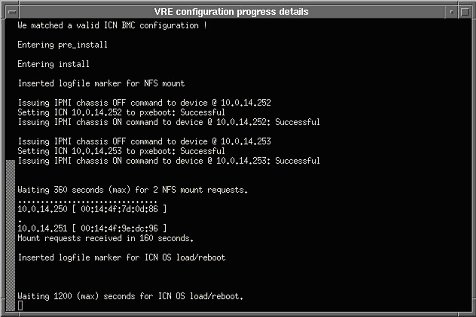

Operating Documentation
Direction 5440001-3, Rev# 6
Signa HDxt Service Methods
Module Version 4.0, Version Date 11/12/10
Operating Documentation |
| Required Persons | Preliminary Reqs | Procedure | Finalization |
|---|---|---|---|
| 1 | Not Applicable | 1.5 hours | Not Applicable |
Insert the MR Applications media into the Host CD/DVD drive on the GOC (not the one on the SCSI tower).
When the confirmation shown below displays, select [Yes].
Illustration 1: Autorun Confirmation

When the message to turn off power to the DASM (shown below) displays, do so if one is present.
Illustration 2: Turn Off Power to DASM Message

Select [OK] to continue with the software load when either message below displays. (The system is now partitioning the hard drives.)
Illustration 3: Disk Partitioning Message

Illustration 4: Disk Partitioning Screen for HDx

When a window displays with options to [Continue], [Halt] or [Close], do not make a selection; let the program run. After two (2) minutes, the system will automatically reboot.
When a menu displays asking for locale selection, select the language and click [OK]. (Eventually, the Guided Install screen will display.)
Illustration 5: Select Location Menu

When a window displays indicating improvements were made from the previous software version, click [OK] to continue.
| ||||
| The last GI configuration can be installed ONLY if it was previously saved using the [Save GI Configuration to MOD]. | ||||
A message box (shown below) for restoring the Guided Install GUI configuration will display.
If the GI configuration was not saved or a software load is being performed for the first time, press the [Cancel] button to continue manually with the installation, or
If the GI configuration was saved, insert the SaveInfo MOD or CD/DVD, and click the appropriate media radio button.
Illustration 6: Guided Install Configuration Screen

Select the [OK] button.
| NOTE: | The normal SaveInfo files will be restored later in the software load process. |
Click each tab to verify the correct values were restored. (See illustration below.)
If any parameters do not match the expected criteria, the left column will be red.
If everything is acceptable, all values will be black.
If a value is changed, it will be noted in blue.
Illustration 7: Guided Install - Configuration Screen

| NOTE: | For release 14.x, the proper LPCA configuration must be added to the hardware configuration. To view the different options, click the [More Info] button to the right of the LPCA Configuration Type. |
If failures are noted, click on the failure and select Go to Tab to display the proper tab.
If the GI configuration was successfully restored from the MOD or CD/DVD, it should not be necessary to change any of the parameters in the Guided Install.
It is not necessary to complete the tabs in any particular order. However, all required configuration tabs must be completed, or the installation will not continue.
| ||||
| If loading software for the first time on a Linux PC, the initial boot-up will fail. Manually enter the “Term Server” information on the Network Info screen. The information must be entered in the format shown in the following example: 20:2D:90:22:44. Use colons between two digits; letters are case sensitive. | ||||
Proceed to the Verification tab shown below. Check the current settings and a pass or fail status, making any necessary changes. (Failed entries are due to missing entries or those with an incorrect format.)
Go to the tab with the error, correct it, then click the [Install] button to open the Verification tab again.
If all entries pass verification at this point, click the [Install Software] button (shown below) to begin the MR Applications load. (The button will not activate if there are any failures.)
Illustration 8: Guided Install - Verification Tab

When a message window displays with Verify time and zone, click [Confirm] to continue or [Abort] to return to Guided Install.
If the Time/Date and Zone are incorrect, select the Set Time & Date option from Guided Install, and make the necessary corrections. (The Verification tab will redisplay.)
A message, Software Installation in progress, will display that indicates the software is loading. (The MR Applications load will take 7 to 12 minutes, depending on the system it is loaded on.)
Once the MR Applications load is complete and the message shown below displays, click [OK] to close this window.
Illustration 9: Guided Install - Software Load Complete

If a message displays asking, Do you want to run media/cdrom/autorun?, always click [No] or [Ignore]. Do not select [Yes].
At this point, the GUI will change from the Install phase. If a SaveInfo MOD or CD/DVD is not available, go to each tab of the Guided Install and complete or update all system information manually. (A Help button is available on each tab that will open a window with information on the required data and its format for that page.)
Remove the MR Applications media from the GOC.
If performing an Lx to HDx upgrade, RestoreInfo must be done at this time, or options will not be converted to HDx. Option conversion is restricted to the first RestoreInfo. If a restore from the same info is done a second time without a Load from Cold, converted options will be lost.
To perform the RestoreInfo at this time, go to Guided Install, and choose Save/Restore to display the Save/Restore tab shown below.
Select [Restore Information], and choose the proper media (either MOD or CD/DVD).
Insert the proper media, and select [Restore all files automatically].
Illustration 10: Save/Restore Screen

| NOTE: | If restoration fails, the media will automatically eject. Exit the Guided Install and allow the system to reboot. When the system has restarted, return to the Guided Install and attempt to RestoreInfo again. |
A RestoreInfo in Progress window will scroll filenames as they are restored. When the RestoreInfo is complete and the message shown below displays with the instructions to run the update utility, click [OK] to continue.
Illustration 11: Guided Install - Update Utility Message

When the Restore Manager menu opens, make sure the All box is selected to restore all items, then click the [Update] button.
Illustration 12: Guided Install - Restore Utility

When the update is complete, click [Quit] and [Yes]. A message similar to the one below will display with the location of the log file of changes made by the Restore Manager.
Illustration 13: Log File

In the next window that displays, click [OK] to exit the Guided Install. If everything updates successfully, click [Quit] and select [OK].
Beginning with Signa 10.x, coil parameters have changed. For upgrades from 8.x or 9.x, a coil update will run to add the new parameters to the existing coil definitions.
| ||||
| If there are unknown coils that do not map to a known coil configuration, such as a research coil, inform the customer of the situation. GE Service must NOT change individual parameters for research coils. The customer must work with the Coil Vendor to obtain the proper coil config file. | ||||
The success of the update is dependant on recognition of coil names. If no discrepancies are found, continue to Step 2.c. If any coils are not recognized during the update, the error message shown below will display.
Illustration 14: Coil Config Upgrade Status Message with Unknown Coils Found

If unknown coils are found, click [OK], finish the software load, then:
Go to the Common Service Desktop > Configuration > Config File Manager > CoilConfig.
Select the Manage Unknown Coils option, and add all unknown coils. For instructions on properly managing unknown coils, refer to the Unknown Coils Configuration.
If a DASM is present, turn the power back on.
Reboot the system at this time by typing: reboot in a C-shell.
Log into the system with the user name of root and operator for the password.
Load the VRE software as follows:
Go into Guided Install and select VRE Configuration to display the VRE Configuration tab shown.
Illustration 15: VRE Configuration Tab

Click on [Configure VRE Blades].
Verify that the VRE Blades are properly installed and all hardware connections are in place, including Ethernet connections.
Select the proper number (1, 2 or 4) of ICNs or VRE Blades. (Choose 1 or 2 when silver 5127452-3 ICNs are installed, and 2 or 4 when black 5127452 ICNs are installed.)
| NOTE: | Either black or silver ICNs will be installed. A combination of the two hardware types will not work on the system and should not be present. |
This procedure will take 15 to 20 minutes to complete depending on the number of ICNs in the system.
The screen shown below will display indicating the progress.
Illustration 16: VRE Configuration Progress

Once the configuration completes successfully, click [OK]. (It is not necessary to perform a system restart at this time.)
| NOTE: | If experiencing configuration problems, refer to VRE Troubleshooting. |
| ||||
| If the system does not properly boot on the first attempt, the Term Server may need to be reset. If this is the first or initial software load, perform a Term Server Reset as follows: | ||||
Remove the power connector from the Term Server.
Connect power to the Term Server while pressing and holding the [Reset] button (small square button next to the power jack) for about 20 seconds.
If communication problems are perceived between the Linux PC and Term Server, ping the Term Server as follows:
Open a C-shell.
Type: cd /etc and press <Enter>.
Type: more hosts and press <Enter>.
Ping the TS1 address by typing: ping x.x.x.7 and press <Enter>.
| NOTE: | Proper communication should be evident. The x.x.x. is the TPS Subnet address. The Term Server may need to be reset several times in order to establish communication with the Linux PC. |
To stop the test, type: ^z.
Exit the Guided Install screen by selecting File, then Quit.
| ||||
| Restricted Service Software is only available for GE use; Advanced Service Software is only available to sites with a valid Advanced Service Package Limited License. GE Healthcare Restricted Service Software should also configure InSite Interactive. | ||||
To install new options using eLicense, refer to Software Option Installation with eLicense.
Make sure the MR Applications software is not running, and log in with the user name of root and the password of operator.
Click the Service SW/InSite option located near the bottom of the Guided Install menu, and select the Load Restricted Software option.
The system will respond with the window shown below.
Read the proprietary statement, continue by sequentially clicking the 1, 2 and 3 buttons, then [OK].
Insert the Restricted or Advanced service software DVD and click [OK]. The message shown below will display while the software is loading, which will take about three (3) minutes.
Illustration 17: Configure InSite Menu

When the InSite Interactive screen displays, select [Accept] three times if performing the InSite checkout at this time, or select [Decline] to perform the checkout later.
The DVD will auto eject after the load is complete.
Perform a SaveInfo to save the latest changes:
Insert the site SaveInfo media (MOD, CD or DVD) or blank MOD into the drive.
| NOTE: | The Save to MOD process does not create a complete SaveInfo disk. It only creates a copy of the information already entered on the Guided Install tabs in order to update them later during a new installation. (SaveInfo uses the Save/Restore tab.) The [Save GI Configuration to MOD] and SaveInfo can be saved on the same MOD. A separate partition is built for each. |
Select the Save/Restore tab, and click the [Save Information and Save GI] button.
Insert the normal SaveInfo or a new MOD/CD/DVD into the drive if not already there.
At the top left of the Install GUI, select File and [Save GI Configuration to MOD]. (This will save the information that was entered in all the edit fields in the GUI.)
Remove the Restricted or Advanced service software from the DVD drive.
| ||||
| Sites with in-house contracts may be able to skip these next steps. Only Revision 7 or higher Service Methods DVD will load. | ||||
Launch the Guided Install.
In the Guided Install window, select Service SW/Insite in the left navigation pane.
Illustration 18: Loading Service Documents on Scanner

Insert the Service Methods DVD into the disk drive on the PC.
To mount the DVD type: mount/mnt and press [Enter].
Click [Install Service Documentation].
When the message shown below displays, click [Full CD].
Illustration 19: CD Load Question

After the installation of the DVD contents, remove the DVD from the system:
Open a C-shell.
Type: umount /mnt/cdrom.
Right mouse click on the Common Service Desktop, and select [Logout].
As a part of software setup, load the Operator Manual DVD in the local language. The load will take approximately 12 minutes to complete.
Select Display MOD/CD-ROM from the Guided Install.
When the MOD/CD-ROM tab displays, click [Setup Devices] and follow the outlined tasks. (The message, Device configured, displays once configuration is completed for each device.)
Perform a Daily Automated Quality Assurance (DAQA) scan to verify system integrity. Instructions can be found in the system Operator Manual.
If applicable, verify the system can network to other systems by transferring images.
If applicable, verify the system can properly film.